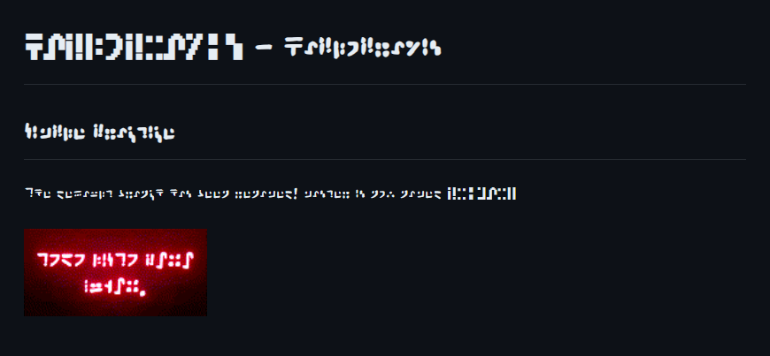

- Haplopraxis - - Simple Practice
The default branch has been renamed! master is now named
This page is live at https://standardgalactic.github.io/haplopraxis
'
In the monastery, Bruno wrote a tale called "On Noah's Ark."
In it, hardworking donkeys, representing the monks, were assigned the lower part of the ark, while majestic animals like lions and elephants enjoyed the upper levels.
The donkeys questioned the fairness, but the ark's clever manager, a fox, assured them their work was essential for everyone's safety.